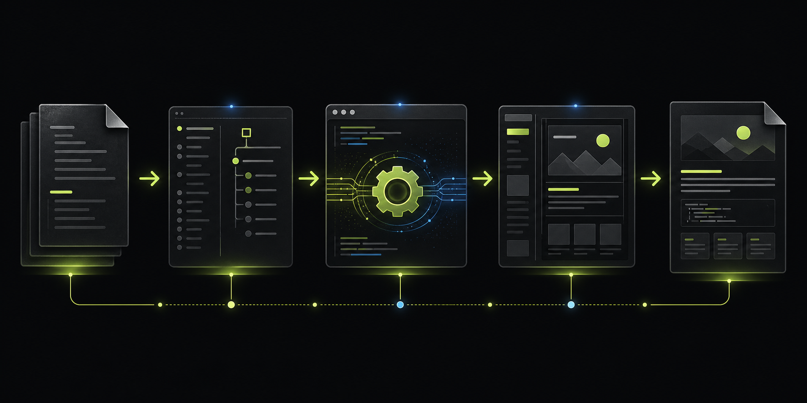

Atlas Docs.
Atlas Docs is a Python package and CLI for compiling a structured Markdown source tree into a single-page documentation site with sidebar navigation, search, themed typography, and interactive reference blocks.
What it is
Atlas Docs has two layers:
- The reusable package in
src/atlas_docs/, which loads Atlas source files, renders Markdown and directives, and emits a static HTML document. - The higher-level authoring workflow defined in
ATLAS_DOCS_FORMAT.mdand thecreate-documentationCodex skill, which generates that source tree from a project.
index.html that contains all sections and client-side navigation.
:::method, :::table, :::cards, :::callout, and other Atlas directives to make technical docs denser and easier to scan.
What Atlas builds
The generator expects a source directory with metadata.md, navigation.md, assets.md, and content/*.md. The CLI then parses those files, resolves section order from the navigation file, renders each content page to HTML, and injects CSS and JavaScript from the selected theme.
atlas-docs command signatures and output behavior.Repository scope
This repository currently exposes three CLI commands through Typer: init, build, and serve. It also bundles two related themes, atlas_dark and atlas_light, and switches between them based on the site metadata plus theme family rules in Renderer and themes.
0.1.0 from pyproject.toml.How Atlas Works
The Atlas workflow is a pipeline: source files define site structure, the loader resolves them into a typed site model, the Markdown renderer expands Atlas directives, and the renderer emits a themed HTML document.
Pipeline

The build path is straightforward:
- Resolve the source root from the path you pass to the CLI.
- Read
metadata.md,navigation.md, andassets.md. - Convert navigation entries into section labels and slugs.
- Load each
content/*.mdfile referenced by the nav. - Render prose, cross-section links, inline code refs, directives, headings, and code blocks.
- Render a Jinja template with the site payload, theme CSS, and bundled JavaScript.
| Stage | Module | Responsibility |
|---|---|---|
| Source discovery | loader.py |
Validates the Atlas directory and maps nav labels to slugs |
| Markdown rendering | markdown.py |
Expands custom syntax such as [doc:slug] and :::method |
| HTML output | renderer.py |
Builds final HTML, CSS, JavaScript, and serialized site config |
| Theme resolution | theme.py |
Loads the active theme, applies metadata overrides, and computes alternate scheme support |
Source files and their roles
The source format deliberately splits identity, navigation, assets, and content into separate files. That keeps docs maintainable:
metadata.mdcontrols branding, fonts, theme accents, and search copy.navigation.mddefines the sidebar groups and determines the order of all sections.assets.mdnames SVGs and images so content pages can refer to them indirectly.content/*.mdcontains the actual prose and Atlas directive blocks.
Readers in a lookup mode care most about navigation.md and the section pages. Authors care most about a predictable structure. Atlas uses the same split for both.
Why it stays single-page
The generated output includes all sections in the DOM at once. Navigation and cross-section links switch the active section client-side instead of issuing page loads. That gives Atlas its reference-manual feel while still letting content stay split across source files.
Install the CLI
Atlas Docs can run as an installed command or directly from source. The repository currently targets Python 3.11+ and exposes the atlas-docs entry point through pyproject.toml.
Editable install
From the repository root:
py -m pip install -e .That installs the atlas-docs console script from the [project.scripts] entry in pyproject.toml.
Run from source
If you do not want an editable install, set PYTHONPATH to src and invoke the module directly:
$env:PYTHONPATH = "src"
py -m atlas_docs.cli build .\my-docs --out .\dist\index.htmlRuntime dependencies
Atlas Docs currently depends on Typer, Jinja2, markdown-it-py, mdit-py-plugins, PyYAML, RapidFuzz, cydifflib, and watchfiles.
pyproject.toml. There is no separate lockfile in this repository.Build your first site
The shortest end-to-end flow is: initialize a source tree, edit the generated Markdown files, and run the build command to produce a static index.html.
Initialize the source tree
atlas-docs init my-docsThat creates:
my-docs/
metadata.md
navigation.md
assets.md
content/
introduction.mdEdit the source
Update metadata.md with project identity and colors, define groups in navigation.md, then add matching content/*.md files for every nav entry.
navigation.md and the matching file is missing from content/, the loader raises FileNotFoundError during build.Build the HTML
atlas-docs build my-docs --out dist/index.htmlThe generated file contains all sections, styles, and behavior in one HTML document.
Preview locally
atlas-docs serve my-docs --port 8000That command builds a preview into .atlas-preview/index.html by default, then serves the output directory over a local HTTP server.
- init - Create a starter Atlas tree
- build - Compile a source tree into HTML
- content/*.md - Write section files correctly
Use the Codex skill
The create-documentation skill sits above the CLI. It inspects a local or remote project, designs documentation navigation around the project domain, writes Atlas source files, and builds the resulting site.
Install the skill into the target repository
For those that want to generate docs with Codex, place the skill bundle at your repository root:
your-project/
.agents/
skills/
create_documentation/
SKILL.md
references/
scripts/That keeps the workflow local to the project instead of depending on a global
Codex setup. Once that folder exists at the root, Codex can expose the skill as
/create documentation. If Codex cannot find the skill, then restart the instance.
What the skill adds
The CLI expects you to author Atlas source manually. The Codex skill automates the authoring layer:
- It infers the project to document from the prompt.
- It classifies the project domain before writing nav entries.
- It separates orientation, guides, and reference pages so the site is easier to scan.
- It chooses metadata and branding from the project rather than using arbitrary values.
- It runs the bundled Atlas generator from the skill package.
When to use it
Use the skill when you want Atlas docs for:
- the current repository
- another local repository
- a non-local project that first needs primary-source research
Bundled build command
The skill keeps its own vendored atlas_docs package under scripts/atlas_docs/, so it does not depend on this repository being installed into the environment:
$env:PYTHONPATH = "<skill-dir>\scripts"
py -m atlas_docs.cli build .\atlas_sources\[project] --out .\docs_site\[project]\index.htmlsrc/atlas_docs/ and the packaged skill bundle under .agents/skills/create-documentation/.init
atlas-docs init creates a minimal Atlas source tree with starter metadata, navigation, assets, and one introduction page.
Signature
Behavior
The init command calls renderer.init_site(path), creates the target directory if needed, creates a content/ directory, and writes starter versions of:
metadata.mdnavigation.mdassets.mdcontent/introduction.md
Arguments
| Argument | Type | Required | Description |
|---|---|---|---|
PATH | Path | Yes | Directory where the starter Atlas source tree will be created |
Example
atlas-docs init docs-sourceAfter running the command, edit the generated files and then continue with build.
build
atlas-docs build compiles an Atlas source directory into a static HTML file. This is the main production command.
Signature
Parameters
| Parameter | Type | Default | Description |
|---|---|---|---|
SOURCE |
Path |
— | Atlas source directory |
--out, -o |
Path |
dist/index.html |
Output HTML path |
--theme, -t |
str |
atlas_dark |
Theme name or theme directory |
--pretty |
bool |
False |
Declared for debugging, though current CLI code always calls build_site(..., minify=False) |
What it does
build loads the site via load_site(), resolves the theme family and alternate color-scheme variant, concatenates theme CSS plus bundled JavaScript, renders the base Jinja template, and writes the resulting HTML to the requested path.
--pretty is currently accepted by the CLI but does not change output formatting because the command hard-codes minify=False. That is a repository fact, not a docs convention.Example
atlas-docs build my-docs --out dist/index.html --theme atlas_darkserve
atlas-docs serve builds a preview into a directory and serves it over Python's standard library HTTP server.
Signature
Parameters
| Parameter | Type | Default | Description |
|---|---|---|---|
SOURCE | Path | — | Atlas source directory |
--out-dir | Path | .atlas-preview | Directory where preview files are written |
--theme, -t | str | atlas_dark | Theme name or theme directory |
--port, -p | int | 8000 | Local port for the HTTP server |
Behavior
The command builds index.html into the selected output directory, changes the working directory to that output folder, and then starts socketserver.TCPServer with http.server.SimpleHTTPRequestHandler.
watchfiles is present as a dependency.metadata.md
metadata.md defines site identity, theme accents, typography, default color scheme, and search UI copy. It is a frontmatter-only file with no prose body.
Purpose
Use metadata.md to set the values that affect the whole site rather than any one page.
accent_dark, accent_lightbody_font, mono_fontMinimal example
---
name: Atlas Docs
version: v0.1.0
tagline: Build single-page documentation sites from Markdown
accent: "#c8f060"
accent_dark: "#c8f060"
accent_light: "#7d9f20"
color_scheme: dark
features:
search: true
---Theme overrides
theme.py lets metadata override visual choices from the chosen theme family. In practice that means the theme can supply defaults, but project-specific docs can still replace accent colors and fonts without editing theme files directly.
assets.md
assets.md is an optional registry for SVGs and images. It keeps raw paths out of section prose by assigning each asset a short name.
Supported catalogs
name | path.name | path | alt text.name | url | alt text.Referencing an asset
Use the @asset[name] syntax inside content files:
@asset[logo-mark]The Atlas Docs source in this repository uses that pattern for the introduction hero image and the pipeline diagram in How Atlas Works.
Current implementation note
The renderer resolves asset declarations into inline placeholders or <img> tags during Markdown rendering. Local SVG and image assets are now copied into the built site's assets/ directory during the build so ./assets/... references stay portable.
content/*.md
Each file in content/ is one navigable section. The slug in navigation.md must match the filename, and the frontmatter supplies the page hero metadata.
Frontmatter
Common frontmatter keys:
| Key | Description |
|---|---|
tag | Small category label above the title |
title | Main page heading |
title_em | Optional emphasized suffix rendered in accent color |
lead | Subtitle paragraph under the title |
breadcrumb | Optional breadcrumb override |
comment | Optional HTML comment label carried into the section metadata |
Heading and anchor behavior
Atlas assigns DOM IDs to ##, ###, and #### headings and supports explicit anchor overrides:
## Request options {id=request}
### Theme family {id=theme-family}Those anchors let you target subsections with [doc:slug#anchor].
Directive blocks
The current renderer supports these purpose-built blocks:
Code blocks
Python code fences receive custom highlighting from highlight_code() in markdown.py. Other languages render without the Python-specific token styling.
Loader and site model
The loader is responsible for turning an Atlas source directory into a typed Site object composed of metadata, nav groups, assets, and rendered sections.
Core types
models.py defines the repository's structural dataclasses:
external flag.Loader behavior
load_site() performs several normalization steps:
- repairs common mojibake patterns before YAML parsing
- tolerates pipe-style nav entries that are not valid YAML scalars by quoting them
- supports both a direct source root and a nested
atlas_docs/directory - computes fallback breadcrumbs and label maps from navigation
Markdown and directives
markdown.py is where Atlas becomes more than plain CommonMark. It adds internal document links, inline code references, asset expansion, custom blocks, heading IDs, and Python code highlighting.
Extensions over plain Markdown
| Feature | Input syntax | Result |
|---|---|---|
| Internal doc link | [doc:slug] | Client-side section link using the nav label |
| Custom internal link text | `[label | doc:slug]` |
| Inline code ref | `token{ref=slug}` | Clickable code token tied to a section |
| Asset reference | @asset[name] | Inline SVG placeholder or image tag |
| Directive block | :::kind | Structured HTML component |
Directive coverage
The current implementation handles feature_grid, cards, callout, method, selector_list, table, quick_links, and reference_list.
Heading IDs
Atlas strips explicit {id=...} suffixes from the rendered heading text, but preserves them for the resulting DOM ID. If no explicit anchor is present, it slugifies the heading text.
Syntax highlighting
Python code fences are tokenized with repository-defined regex rules for comments, strings, decorators, classes, functions, keywords, and numbers. That means highlighting is deterministic and local to the project; it is not delegated to an external highlighter.
Renderer and themes
renderer.py and theme.py turn a loaded site into the final document by choosing the active theme, layering metadata overrides, serializing search/navigation state, and rendering the Jinja base template.
Build path
build_site() does four main things:
- Loads the site model from source files.
- Resolves the active theme and optional alternate color-scheme variant.
- Concatenates CSS and bundled JavaScript modules.
- Renders
templates/base.html.j2with the site payload and serialized config.
Theme family behavior
Atlas currently ships one theme family with two variants:
| Theme | Color scheme | Notes |
|---|---|---|
atlas_dark | dark | Default theme for CLI build output |
atlas_light | light | Alternate variant in the same family |
If the chosen theme belongs to a known family, Atlas can resolve an alternate theme name and expose a color-scheme toggle in the generated site configuration.
Metadata overrides
The theme loader lets site metadata override:
- accent color for the active scheme
- display, body, and mono fonts
- font source URL
- default color scheme
Search and navigation payload
The renderer serializes a JSON config object with section metadata, theme metadata, search copy, and feature flags. The client-side JavaScript uses that payload to drive section routing, search indexing, and user settings.